Bruschetta al pomodoro
Produkcyjne SVG — migracja 2.1.17Produkcja
assets/food-svg/bruschetta.svg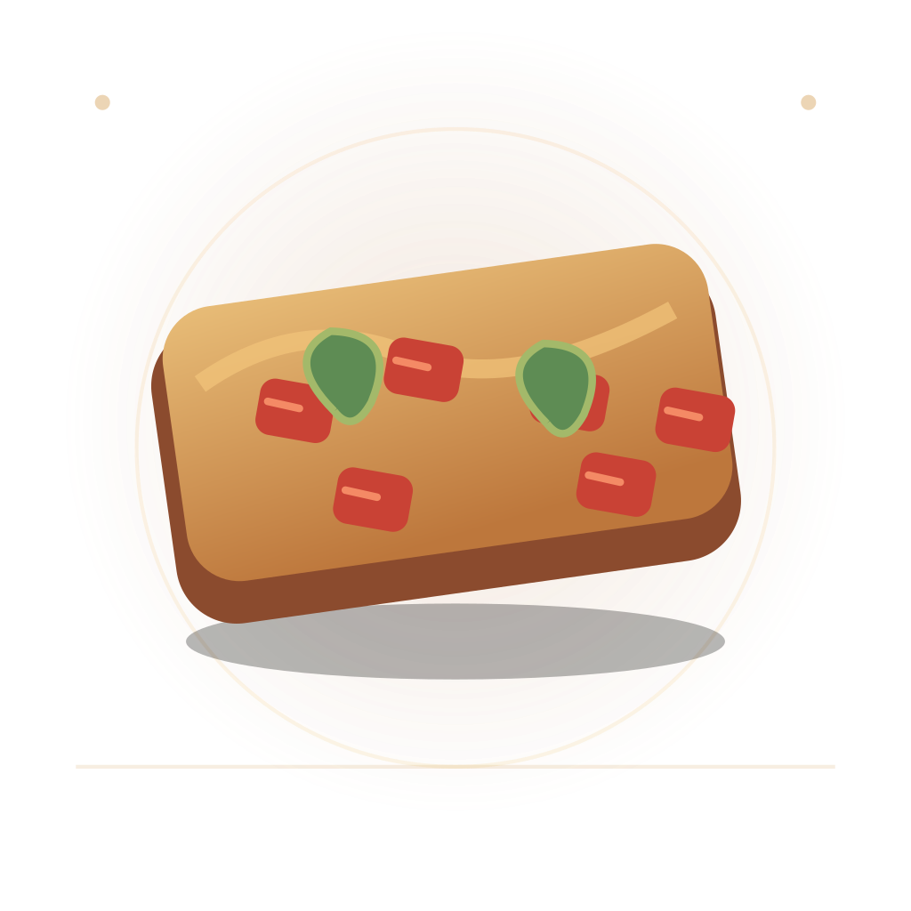
PrzezroczystośćCiemne
Jasne
Porównanie lokalnych ilustracji produkcyjnych z prototypami na szachownicy (kontrola przezroczystości), ciemnym i jasnym tle. To narzędzie projektowe — nie zmienia przypisania grafik w aplikacji.
assets/food-svg/bruschetta.svg
Przezroczystośćassets/food-svg/carbonara.svg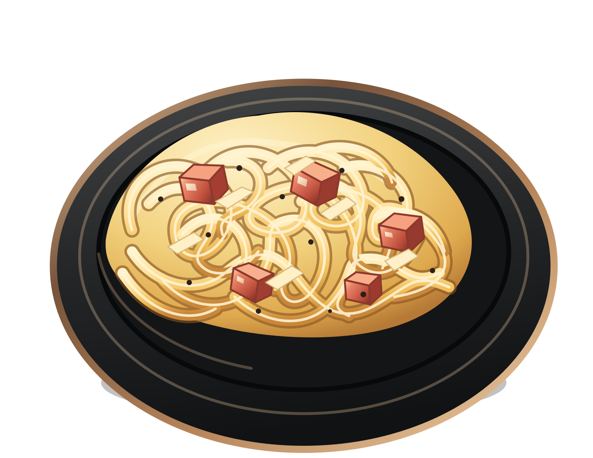
Przezroczystośćdesign/svg-hybrid/carbonara.svg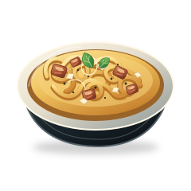
Przezroczystośćassets/food-svg/gnocchi-pomodoro.svg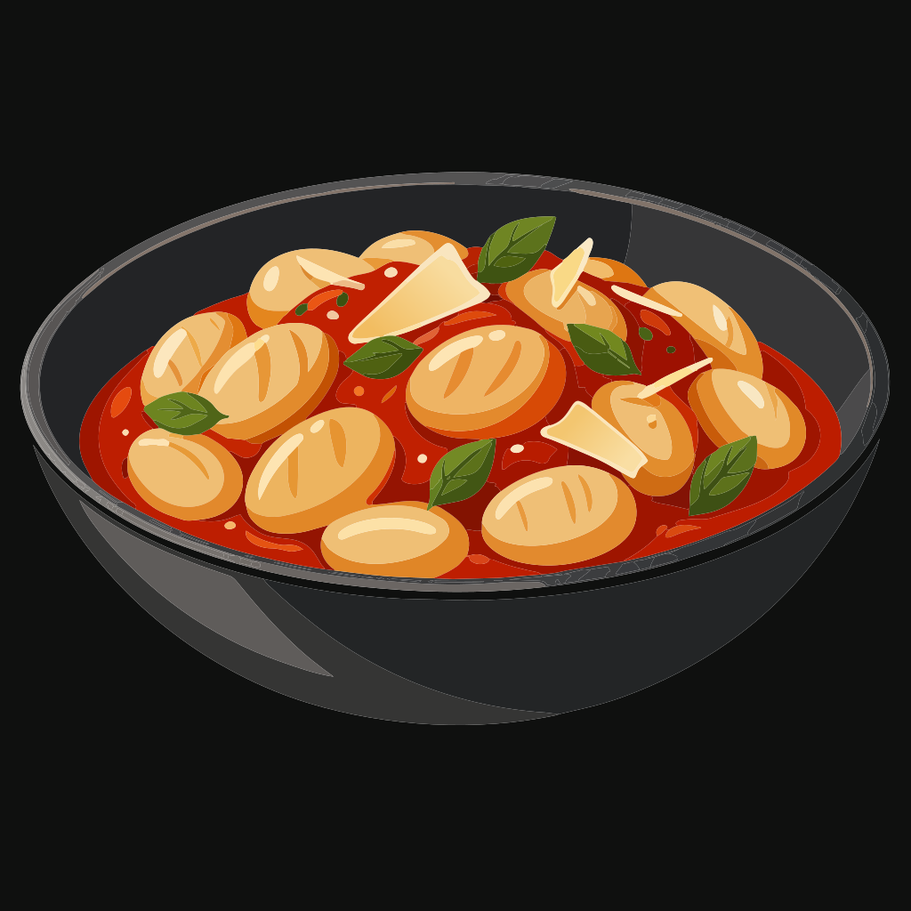
Przezroczystośćdesign/svg-hybrid/gnocchi.svg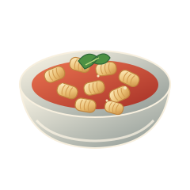
Przezroczystośćassets/food-svg/lasagna.svg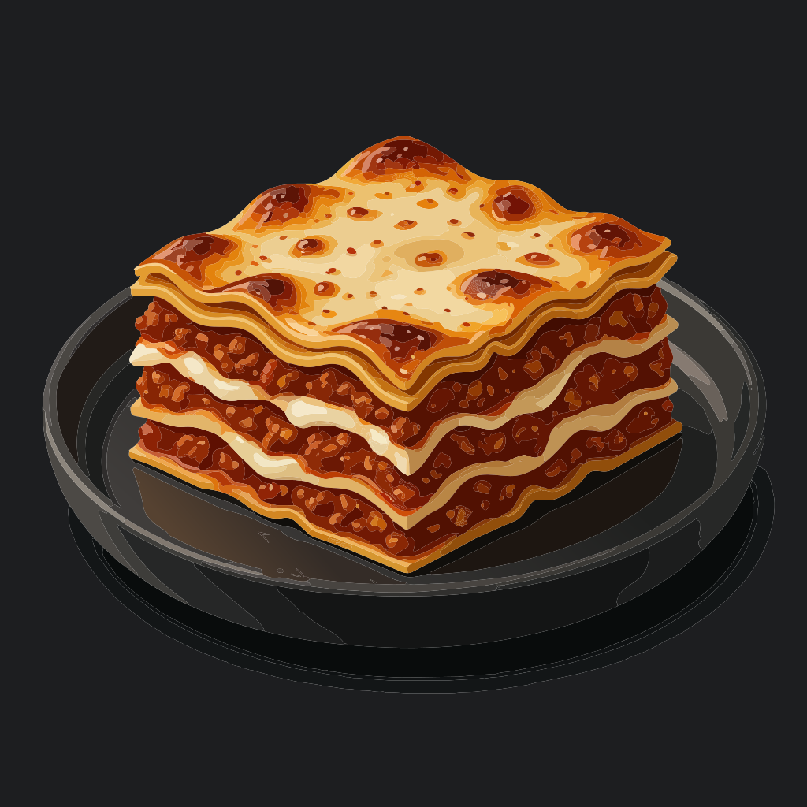
Przezroczystośćdesign/svg-hybrid/lasagna.svg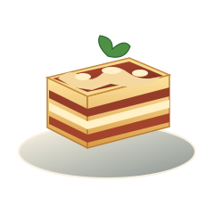
Przezroczystośćassets/food-svg/panna-cotta.svg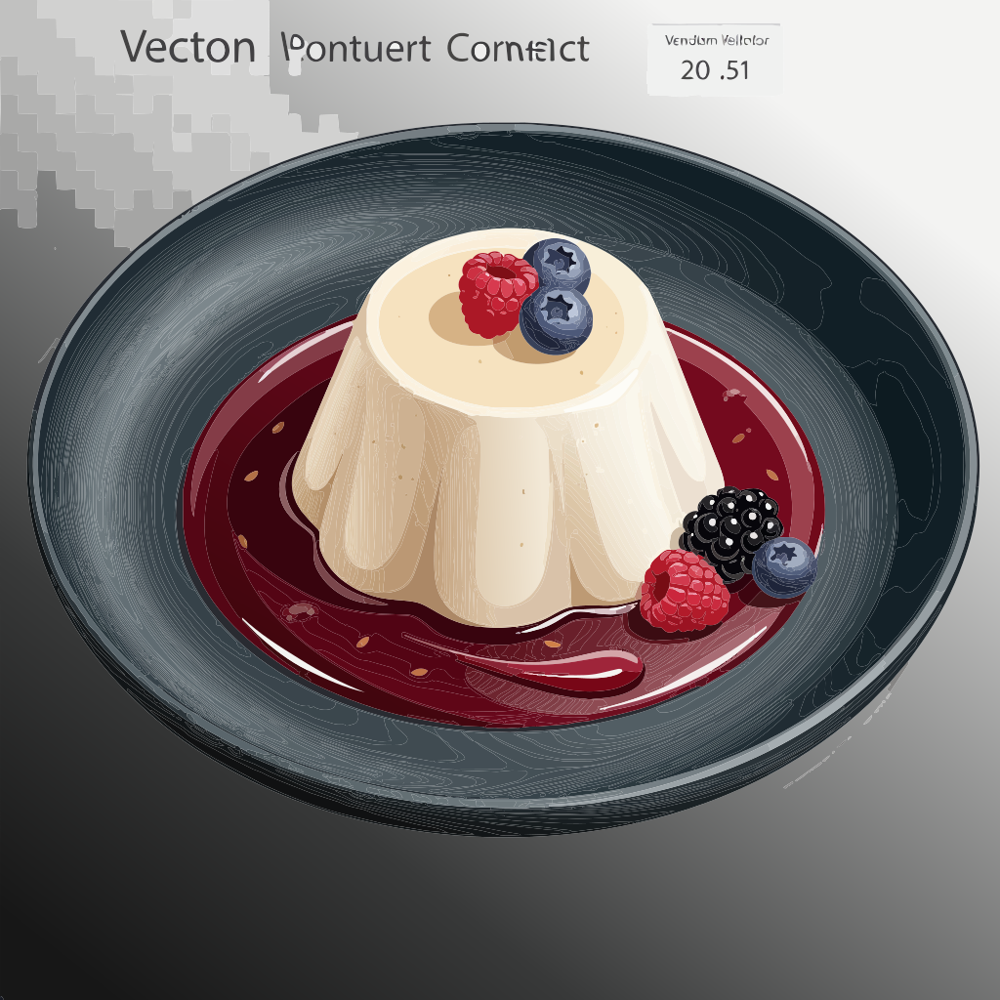
Przezroczystośćdesign/svg-hybrid/panna-cotta.svg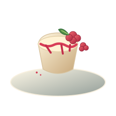
Przezroczystośćassets/food-svg/pizza-margherita.svg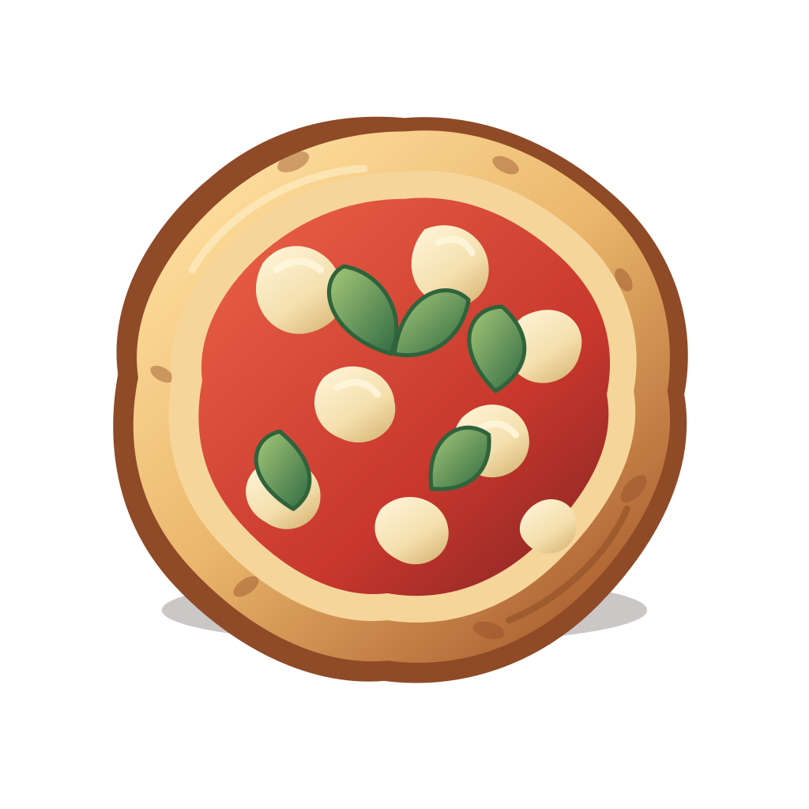
Przezroczystośćdesign/svg-hybrid/margherita.svg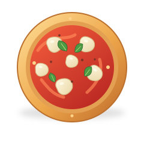
Przezroczystośćassets/food-svg/ravioli-ricotta-spinaci.svg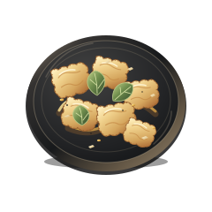
Przezroczystośćdesign/svg-hybrid/ravioli.svg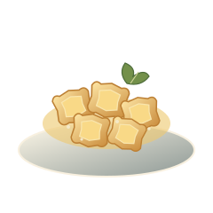
Przezroczystośćassets/food-svg/risotto-funghi.svg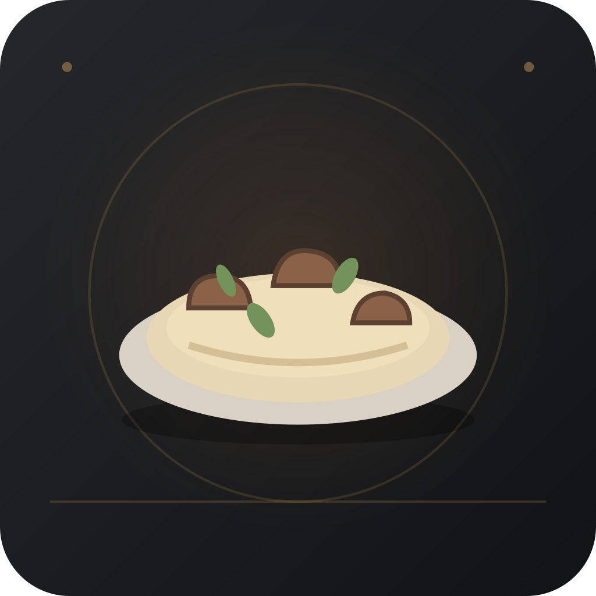
Przezroczystośćdesign/svg-hybrid/risotto-funghi.svg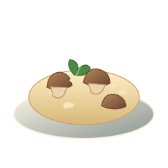
Przezroczystośćassets/food-svg/tagliatelle-ragu.svg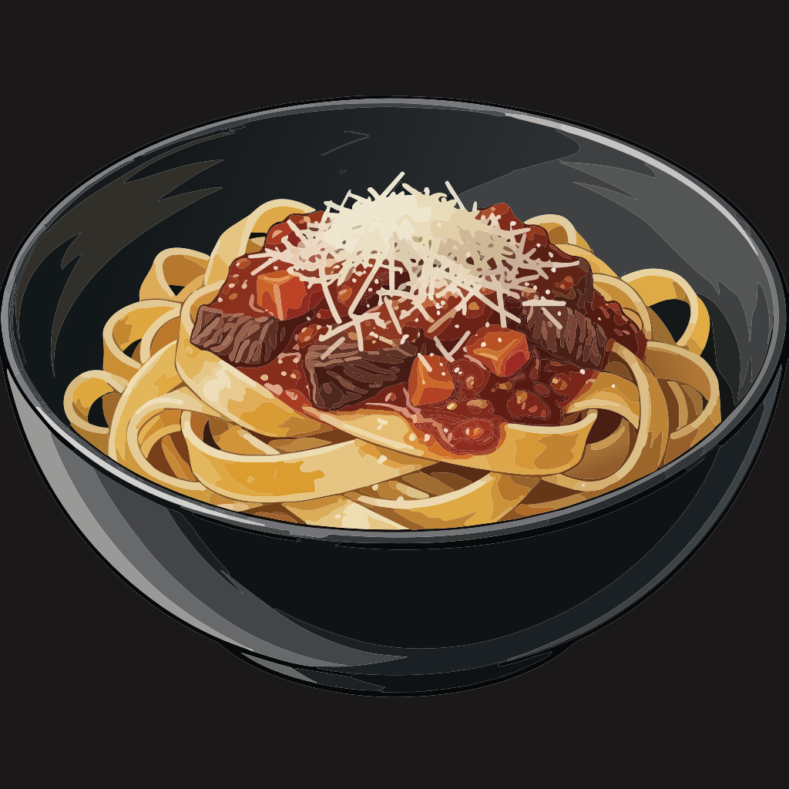
Przezroczystośćassets/food-svg/tiramisu.svgdesign/svg-hybrid/tiramisu.svgdesign/svg-hybrid/tomato-soup.svg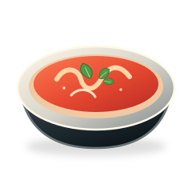
Przezroczystośćdesign/svg-hybrid/burger.svg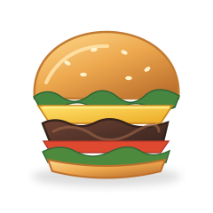
Przezroczystośćdesign/svg-hybrid/greek-salad.svg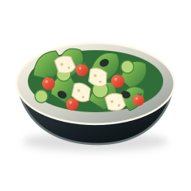
Przezroczystośćdesign/svg-hybrid/mojito.svg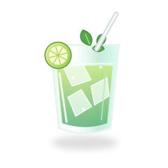
Przezroczystośćdesign/svg-hybrid/sushi-maki.svg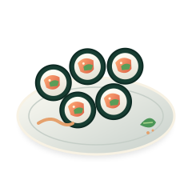
Przezroczystośćdesign/svg-hybrid/salmon-lemon-butter.svg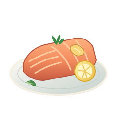
Przezroczystośćdesign/svg-hybrid/steak-herb-butter.svg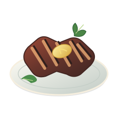
Przezroczystośćdesign/svg-hybrid/pierogi-ruskie.svg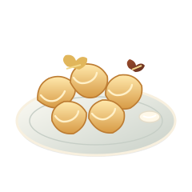
Przezroczystośćdesign/svg-hybrid/caesar-salad.svg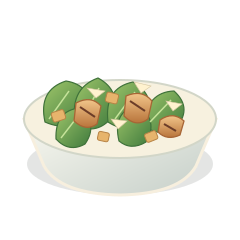
Przezroczystośćdesign/svg-hybrid/mushroom-soup.svg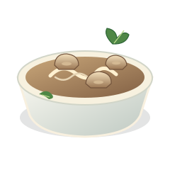
Przezroczystośćdesign/svg-hybrid/bruschetta.svg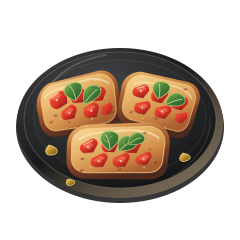
Przezroczystośćdesign/svg-hybrid/tagliatelle-ragu.svg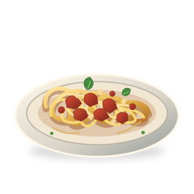
Przezroczystość